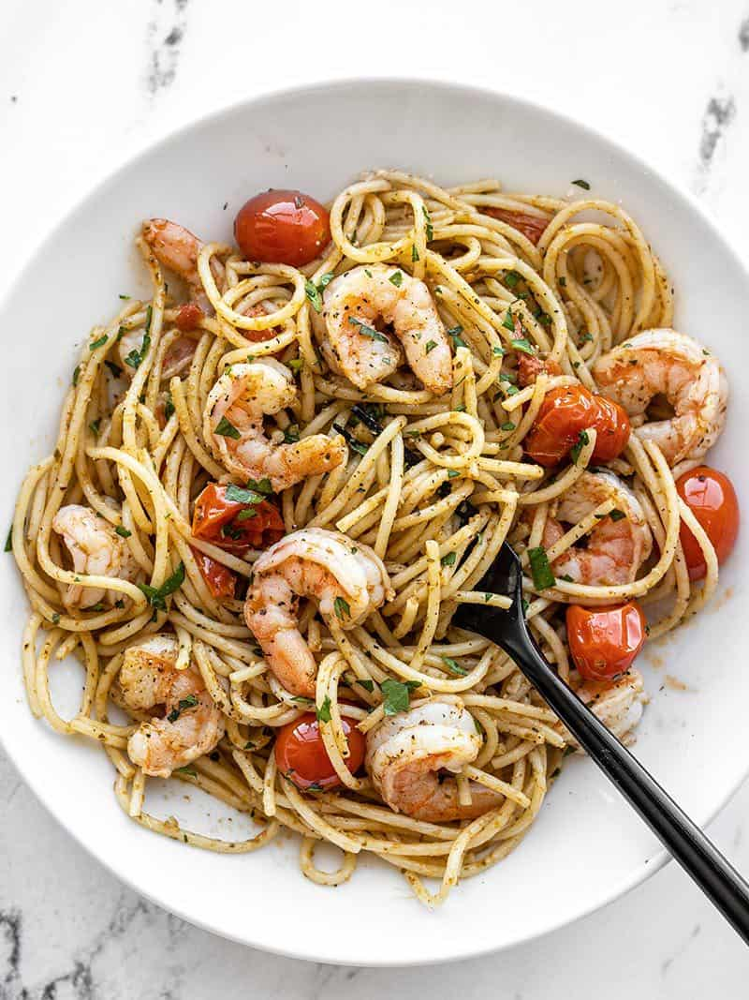

PESTO SHRIMP PASTA
This Pesto Shrimp Pasta is a restaurant quality meal that you can make in under 30 minutes! The perfect quick weeknight meal.

by Beth - Budget Bytes
published Dec 28, 2010 updated Aug 27, 2020
SERVINGS
4
PREP
10 minutes
COOK
15 minutes
TOTAL
25 minutes
INGREDIENTS
- 12 oz. shrimp, peeled and deveined
- 8 oz. angel hair pasta
- 2 Tbsp olive oil, divided
- 2 cloves garlic, minced
- 1 pint grape tomatoes
- 1/4 cup basil pesto
- 1 Tbsp grated Parmesan
INSTRUCTIONS
- If using frozen shrimp, place them in a colander and run cool water over top to thaw (this should only take a few minutes). Peel the shrimp and remove the tails. Pat the shrimp dry with a paper towel.
- Bring a large pot of water to a boil for the pasta. Once boiling, add the pasta and continue to boil until the pasta is tender (about seven minutes). Reserve about ½ cup of the starchy pasta water before draining the pasta in a colander.
- While the pasta is cooking, prepare the rest of the dish. Heat 1 Tbsp olive oil in a large skillet. Once hot, add the prepared shrimp and sauté just until the shrimp turns pink and opaque (2-3 minutes). Remove the cooked shrimp to a clean bowl.
- Add another tablespoon olive oil to the skillet and add the grape tomatoes and minced garlic. Continue to sauté over medium until the tomatoes begin to burst and release their juices. If the garlic begins to brown before the tomatoes have burst, add a couple tablespoons of water to the skillet to slow the browning.
- Once the tomatoes have broken down in the skillet, add the cooked and drained pasta, ¼ cup pesto, and about half of the reserved pasta water. Stir to coat everything in the pesto, adding more of the pasta water if needed to loosen the pasta and spread the pesto over everything.
- Finally, return the cooked shrimp to the skillet and stir to combine with the pasta. Top with grated Parmesan, then serve!